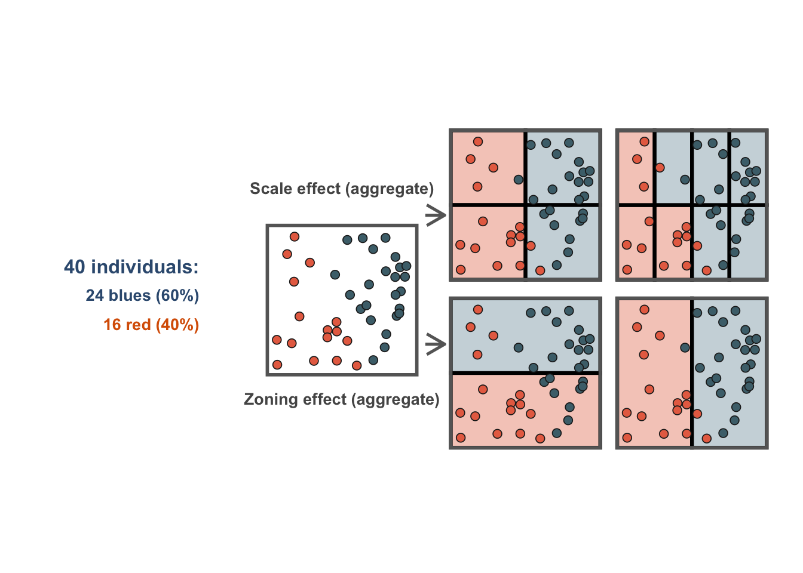
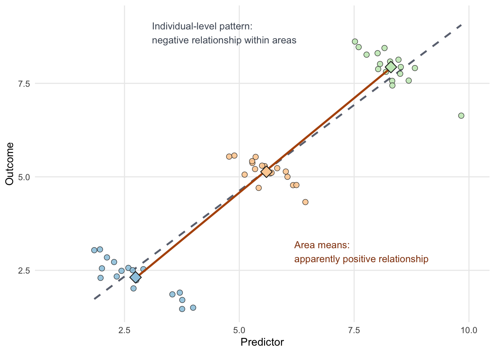

flowchart TB
subgraph L1["Small statistical areas"]
A1["Blocks / output areas"]
A2["Blocks / output areas"]
A3["Blocks / output areas"]
A4["Blocks / output areas"]
end
subgraph L2["Intermediate local areas"]
B1["Neighbourhoods / census tracts"]
B2["Neighbourhoods / census tracts"]
end
subgraph L3["Administrative areas"]
C1["Municipalities / districts"]
C2["Departments / provinces / states"]
end
subgraph L4["National territory"]
D1["Country"]
end
subgraph L5["Supranational areas"]
E1["Macro-region / international region"]
end
A1 --> B1
A2 --> B1
A3 --> B2
A4 --> B2
B1 --> C1
B2 --> C1
C1 --> C2
C2 --> D1
D1 --> E1
1 Embedding space
Location is not just another column in a dataset. Once observations happen somewhere, they become part of a spatial structure shaped by distance, adjacency, containment, connectivity and scale. That is why spatial data are analytically different from non-spatial data: geography changes both what we can observe and how safely we can interpret relationships (Lovelace, Nowosad, and Muenchow 2019; Bivand, Pebesma, and Gómez-Rubio 2013).
This matters even more in the current data-rich environment. Administrative records, mobile devices, transport platforms, satellite systems, environmental sensors and public-service databases now generate large volumes of data with an explicit geographic reference. In practice, many datasets that social scientists work with now contain coordinates, area identifiers, routes, catchments or flows between places, which means that spatial thinking is no longer optional background knowledge but part of core applied data work (Lovelace, Nowosad, and Muenchow 2019; Brunsdon and Comber 2015).
For this course, the main question is therefore practical: how do we make sense of spatial data rather than merely store it? Across the Uruguay-focused chapters, we will move from describing different spatial data types to handling them in R, exploring point events, modelling flows, and then asking how spatial dependence and heterogeneity shape the results we obtain.
1.1 Why spatial data are special
Spatial data are special because the location of an observation changes its meaning. The same value attached to two observations may imply something very different depending on whether those observations are adjacent, far apart, embedded in the same administrative hierarchy or connected by a transport corridor. Spatial context therefore affects description, explanation and policy interpretation all at once.
Geometry is the first reason. Spatial data usually come with a geometry such as a point, line, polygon or raster cell, and that geometry allows us to compute distance, overlap, contiguity, travel cost, exposure and accessibility. In non-spatial tabular data, records can often be reordered without changing the analysis; in spatial data, relative position is part of the information itself.
Dependence is the second reason. Nearby places often share infrastructure, labour markets, environmental risks, housing systems, institutional arrangements and social composition, so values observed in one place are frequently related to values observed nearby (Anselin 1988). This violates the simplifying assumption that observations are independent draws and forces us to think carefully about clustering, spillovers and neighbourhood effects.
Scale is the third reason. A pattern that looks smooth at the department level can become highly uneven when measured for smaller local areas, and a local hotspot can disappear once data are aggregated upward. Spatial data therefore require decisions about the geographic unit of analysis, and those decisions are not neutral because they shape the patterns we see.
Finally, spatial data are often nested. Individual events can be grouped into blocks, neighbourhoods, municipalities, departments or functional regions, and data collected at one level are often used to inform decisions at another. That hierarchical structure is part of what makes spatial analysis powerful, but it is also a source of ambiguity if we do not match the question, the scale and the data structure carefully.
1.2 The data revolution and the rise of spatial data
One useful way to understand the current importance of spatial data is to think about how many ordinary data systems have become spatially enabled. A census table may contain a small-area code, a health record may include the service area of the nearest hospital, a transport feed may record origin and destination, and a social-media or mobile dataset may include coordinates or inferred locations. Even when the geography is coarse, location has become a key attribute in a growing share of the data used in applied research and policy analysis.
This expansion has produced a surge of spatial data: data in which location is directly observed, inferred, or embedded through an area identifier. The shift matters because it changes the kinds of questions researchers can ask. Instead of asking only whether unemployment, injuries or access are high or low, we can ask where they are concentrated, how uneven they are, whether nearby places resemble one another, and whether relationships vary across territory.
The growth of spatial data has not removed the need for judgement. In fact, it has increased it. More coordinates and more maps can create a false sense of precision unless we also understand projections, geocoding errors, confidentiality constraints, aggregation, missing coverage and scale sensitivity (Lovelace, Nowosad, and Muenchow 2019; Bivand, Pebesma, and Gómez-Rubio 2013). Spatial data skills therefore combine technical handling with interpretation: reading geometry correctly, choosing defensible units of analysis, and connecting outputs to the social or policy process that produced them.
Most contemporary data science and machine learning workflows do not treat space as a core modelling problem. They may include coordinates as features, or map results at the end, but they often assume that observations are exchangeable and that relationships are invariant across the study area. This course is about what changes once we take space seriously. It introduces the main data structures and modelling questions needed to embed space in a principled way rather than adding geography as an afterthought.
For this Uruguay course, that means learning to work with several distinct but related data structures:
- area or surface data attached to administrative or analytical units
- point events such as Montevideo traffic injuries
- connections between places, especially origin-destination flows
- outcomes and relationships that may cluster or vary across space
1.3 Main types of spatial data
There are several valid ways to classify spatial data. A helpful starting distinction is between vector data, which represent discrete features using points, lines and polygons, and raster data, which represent space as a regular grid of cells (Lovelace, Nowosad, and Muenchow 2019; Brunsdon and Comber 2015). For course purposes, however, it is often clearer to organise the material around the kinds of analytical and modelling strategies the data call for.

Table Table 1.1 summarises the main families of spatial data that matter for this course. The goal is not to create a dense taxonomy for its own sake, but to identify when the structure of the data changes the analytical logic. If the same broad logic applies, it is useful to signal internal variation without multiplying categories unnecessarily.
| Type | Typical geometry | What a record represents | Example in this course or nearby applications | Why it matters analytically |
|---|---|---|---|---|
| Areal or surface data | Polygons or regular grid cells | An attribute measured for an area or surface unit | accessibility indicators, census rates, deprivation by local area, land cover, temperature surfaces | Requires attention to boundaries, aggregation, adjacency, resolution and MAUP |
| Point data | Points | An event, object or observation at a location | Montevideo traffic injuries, schools, hospitals, incidents | Supports density estimation, hotspot analysis and distance-based reasoning |
| Connection data | Lines, edges, routes, origin-destination links | A physical connection, route, or interaction between places | roads, bus routes, rivers, utility lines, commuting, migration, freight | Emphasises connectivity, topology, direction and separation rather than only point locations |
| Trajectory data | Ordered coordinates through time | A path followed by a moving person or object | GPS traces, mobile phone tracks, vehicle logs | Combines space and time, making sequence and temporality central |
1.3.1 Areal or surface data
Areal and gridded data can be treated together in this course because they usually support the same broad analytical logic: attributes are attached to spatial units that partition the study area. Those units may be irregular polygons such as neighbourhoods, census tracts, municipalities or departments, or regular cells such as grids, pixels and raster surfaces. In both cases the data tell us how an outcome, exposure or condition varies across spatial units rather than across individual events or explicit origin-destination links.
The important differences sit inside the category rather than between completely separate modelling families. Polygon-based area data depend strongly on administrative boundaries and zoning systems, while raster and gridded data depend more strongly on resolution, cell size and resampling choices. But in both cases we still ask similar questions about spatial variation, neighbouring units, aggregation, scale and heterogeneity. For that reason it makes sense to group them together here and then signal their particularities as needed.
This type of data is central to later chapters in the course. When we look at spatial dependence and spatial heterogeneity, we will work mainly with polygon-based indicators linked to Uruguay areas and ask how neighbouring places are related and whether a single model describes the whole geography equally well. The key lesson is that area or surface data are not just tables with a map attached: the spatial partition itself is part of the analytical problem.
1.3.2 Point data
Point data represent discrete locations. A point may indicate where a crash happened, where a school is located, where a household was sampled, or where an environmental reading was recorded. Because point data preserve a relatively fine spatial resolution, they are often the closest available representation of where an observed event or object is actually situated (Tao et al. 2018; Brunsdon and Comber 2015).
Point data are especially valuable for exploratory analysis. They allow us to ask whether events are concentrated, dispersed, clustered around infrastructure, or unevenly distributed relative to population and services. In this course, the Montevideo traffic injuries data provide a concrete example of how point records can be turned into density surfaces and interpreted as patterns of concentration rather than as isolated observations.
1.3.3 Connection data
For this course it is useful to group line, network and flow representations into one broader family of connection data. They all describe relationships in space rather than isolated locations, even if the underlying concept differs. Sometimes the line represents fixed infrastructure such as a road, rail corridor or river. In other cases it represents an interaction between places, such as commuting, migration, freight, or an activity-space link between an origin and a destination (Rowe and Patias 2020).
What these representations share is an emphasis on connectivity, separation and path structure. Two places may be close in straight-line distance but weakly connected in practice, while two more distant places may be strongly linked through transport infrastructure, migration systems or daily mobility. Collapsing them into one category keeps the typology cleaner for the course while still signalling that “connections” can refer to different substantive processes.
Within this broader category, the course focuses mainly on flows. These are origin-destination relationships with a magnitude and often a direction, so the analytical logic differs from point and area data. Distance, travel impedance, origin characteristics and destination attractiveness may all matter at the same time. Later in the course we use Uruguay-focused movement data to show how these relational data can be visualised, summarised and modelled without collapsing them prematurely into attributes of only one place.
1.3.4 Trajectory data
Trajectory data record the path of a moving person or object through space and time. They usually come from GPS devices, mobile-phone traces, logistics systems, vehicles or app-based mobility platforms, and they are increasingly common in research on travel behaviour, exposure, segregation and accessibility (Kwan and Lee 2004; Kong et al. 2018). Unlike static point data, trajectory data preserve sequence, timing and movement between observations.
We do not analyse trajectory data directly in this course, but it is worth identifying them as part of the wider spatial-data landscape. They show clearly that spatial analysis is not only about “where” something is, but also about how movement unfolds, how routes are constrained, and how exposure changes over time and across places.
1.4 Hierarchies, scale and context
One of the most important properties of spatial data is that observations are often embedded in multiple geographic levels at once. A crash happens at a point, but it can also be counted inside a street segment, a neighbourhood, a municipality and a department. A hospital serves a catchment area, but it is also located in an administrative unit and connected to a transport network. The same empirical process can therefore be represented in several ways depending on the question we ask.
This matters because each representation reveals some patterns and hides others. Point data preserve local detail, but they can be noisy and difficult to compare across areas with different population sizes. Area data make comparison easier, but they summarise away within-area variation. Flow data reveal connections across places, but they can conceal what is happening inside each origin or destination. Good spatial analysis requires students to move deliberately between these levels rather than assuming one geography is naturally correct.
Hierarchy is not only geographical. It can also be temporal and spatio-temporal. Daily observations sit inside weeks and months; hourly mobility traces sit inside daily or weekly trajectories; local events are embedded in both wider territories and longer time frames. In practice, this means that “embedding space” often also means deciding how a process is nested in time and whether the unit we observe is the same unit at which the process operates (Kwan and Lee 2004; Kong et al. 2018).
The diagram above draws on the logic of the UK’s hierarchical statistical-geography representations, but generalises it beyond any one country. The central idea is nesting: small statistical areas are grouped into larger local areas, those into wider administrative units, then into countries, and in some cases into supranational regions. This is exactly why spatial data can be summarised at multiple levels and why a pattern that is visible at one level may look different at another. In the ONS material, the named levels are specific to the UK system; here the labels are intentionally generic so students can map the same principle onto Uruguay or other national contexts.
1.5 Space as proxy and model choice
One of the most important ideas to carry through the course is that space is almost always a proxy for something else. A cluster on a map may point to labour-market sorting, service inequality, environmental exposure, historical segregation, administrative practice, network accessibility or some mixture of these. The coordinates or boundaries matter, but they are rarely the substantive mechanism in themselves (Anselin 1988; Lovelace, Nowosad, and Muenchow 2019).
This is why modelling space well requires thinking beyond geometry. The aim is not to “add space” to a model in the abstract. The aim is to decide what aspects of the world a spatial representation is standing in for, and whether that representation preserves the part of reality we care about most. That same logic explains why there is always an element of simplification in spatial modelling. We never model the full complexity of the real world; we create a stylised version that retains the relationships, scales and spatial structures most relevant to the problem at hand (Bivand, Pebesma, and Gómez-Rubio 2013; Brunsdon and Comber 2015).
Those choices shape methodology. If the key issue is local concentration, point-pattern thinking may be appropriate. If the question is about interaction between origins and destinations, we need a flow model. If the problem is unevenness across territorial units, areal or surface data may be the right abstraction. If the concern is whether nearby places influence one another or whether relationships vary across territory, we need to think in terms of spatial dependence and heterogeneity. The modelling strategy follows from the process we think space is proxying.
1.6 Key complexities and challenges
Working with spatial data is rewarding because geography helps us explain social and environmental processes more realistically. It is also demanding because spatial data come with extra layers of complexity that affect validity, interpretation and reproducibility. The goal of this section is not to overwhelm students with caveats, but to make clear that these issues are part of ordinary good practice rather than advanced exceptions.
1.6.1 Geometry, topology and spatial relations
Spatial records are not only rows in a table. They also include geometric information that determines whether features touch, overlap, contain one another, intersect or remain disconnected. Small errors in geometry, such as invalid polygons, duplicated vertices or mismatched boundaries, can produce misleading joins, wrong neighbour structures or failed overlays.
This is one reason the next chapter spends time on inspecting and validating spatial objects rather than only reading them from disk. In spatial work, data cleaning includes checking whether the geometry makes sense for the question at hand and whether the spatial relations implied by the data match the reality the analysis is trying to represent.
1.6.2 Coordinate reference systems and measurement
Distances, areas and directions only make sense relative to a coordinate reference system (CRS). A dataset stored in geographic coordinates can be perfectly suitable for display while being inappropriate for measuring distances or areas directly. Likewise, combining layers with different CRSs can silently distort overlays if we are not careful about transformation and alignment.
This is a technical issue, but it also has substantive consequences. A travel-accessibility indicator, a kernel density surface or a buffer around a health facility can all be wrong if the projection is inappropriate. Spatial analysis therefore requires students to understand not only how to map data, but how spatial measurement is encoded mathematically in the data structure itself.
1.6.3 Modifiable Areal Unit Problem (MAUP)
The Modifiable Areal Unit Problem (MAUP) is one of the classic challenges in spatial analysis (Openshaw 1981). It refers to the fact that our results can change when we alter the size of the spatial units used in analysis or when we redraw boundaries while keeping the same underlying observations. Because many social datasets are analysed through administrative or analytical zones, MAUP is a routine problem rather than a rare technical curiosity.
Two related mechanisms sit inside the MAUP. The scale effect appears when we move from smaller units to larger units and patterns become smoother or sharper simply because of aggregation. The zonation effect appears when the number of zones stays similar but the boundaries are arranged differently, producing different averages, correlations or apparent clusters (Fotheringham and Wong 1991).

Figure Figure 1.1 now mirrors the usual textbook logic of the MAUP more directly. The left panel shows the unchanged individual observations, the top row shows the scale effect by comparing coarser and finer aggregations of the same points, and the bottom row shows the zonation effect by comparing two alternative boundary systems applied to the same observations. The message is simple but important: the underlying people or events do not change, yet the area-level pattern does.
This has direct implications for applied work in Uruguay and elsewhere. Accessibility, deprivation, educational outcomes or public-health indicators may tell a different story when analysed for broad administrative units than when analysed for smaller local areas. Practical responses include checking sensitivity across scales, using the smallest defensible geography available, and considering functional geographies that better reflect the process under study (Casado-Díaz, Martínez-Bernabéu, and Rowe 2017; Arribas-Bel, Garcia-López, and Viladecans-Marsal 2021; Singleton and Spielman 2013; Patias, Rowe, and Cavazzi 2019). None of these strategies eliminates MAUP, but they make its consequences visible and easier to discuss.
1.6.4 Ecological fallacy
Ecological fallacy occurs when we infer something about individuals from patterns that have only been observed for groups or areas. An area-level relationship can be informative and substantively important, but it does not automatically describe the behaviour or characteristics of the individuals living in those areas. The problem arises when we move from statements about places to statements about people without changing the evidence base.

Figure Figure 1.2 illustrates the logic visually. In the left panel, the individual observations within each area follow a negative relationship: as the predictor increases, the outcome tends to fall. But once those same observations are aggregated to area means, the grouped pattern suggests the opposite, a positive area-level relationship. Nothing about the underlying individuals has changed; only the scale of observation has changed. That is exactly why ecological fallacy is so important in spatial analysis.
This issue is especially relevant in policy-oriented work because many spatial datasets are aggregated by design. A department with low average accessibility or high deprivation may still contain very different neighbourhoods, households and individual experiences within it. The same problem appears in public health: an area with high average deprivation may also show poor average health outcomes, but that does not mean every deprived individual in that area experiences the same level of health risk, nor that every healthier individual lives in a less deprived context. Robinson’s classic example showed that an aggregate correlation can even point in the opposite direction from the individual-level relationship (Robinson 1950). The practical lesson is straightforward: keep interpretations at the scale of the evidence unless individual-level data are also available.
1.6.5 Spatial dependence
Spatial dependence means that values observed in one location are related to values observed in other locations, often nearby ones (Anselin 1988). This can arise because of spillovers, diffusion, shared context, common infrastructure, environmental exposure or market linkages. In social-science terms, places are often not isolated cases but interdependent settings.
This matters because many standard statistical tools assume independence across observations. If neighbouring values are related, model residuals can cluster, standard errors can be misleading, and coefficient interpretation can become less reliable. Later in the course we return to this idea with Uruguay polygon data and show how to diagnose dependence and think about neighbour structures more explicitly.
1.6.6 Spatial heterogeneity and nonstationarity
Spatial heterogeneity refers to unevenness across space. Some places systematically display higher values, lower values or different combinations of characteristics than others, and these contrasts are often visible long before any formal model is fitted. In many applied settings, this is the first substantive reason to map data: not to decorate a result, but to see whether the process of interest is distributed evenly or unevenly across territory.
Nonstationarity takes the idea a step further. It suggests that the relationship between an outcome and its predictors may itself vary across space rather than remaining constant everywhere. A factor associated with hospital accessibility or population ageing in one part of Uruguay may be weakly related, or differently related, in another. This is why later chapters distinguish between detecting spatial structure and asking whether a single global coefficient hides meaningful local variation.
1.6.7 Coverage, quality and confidentiality
A final challenge is that spatial data are not automatically better just because they are spatially detailed. Coordinates may be missing or imprecise, area codes may change over time, platform data may overrepresent certain groups, and administrative systems may record the place of reporting rather than the place where an event actually occurred. In addition, the more spatially precise the data become, the more confidentiality concerns can restrict access, aggregation choices and reproducibility.
This is particularly important in course settings because students often encounter datasets that look ready to map but still require substantial judgement before analysis. Making sense of spatial data means asking how the location information was generated, what geography it represents, who or what may be excluded, and how those limitations should affect interpretation.
NoteCourse prompt
Before moving to the next chapter, try to identify the spatial structure of a dataset you already know. Ask yourself four questions: what is the observational unit, what geometry is attached to it, at what scale is it reported, and what might change if the geography were redrawn or aggregated differently? These questions are often enough to reveal whether a problem is mainly about points, areas, networks, flows, or a combination of several data structures.
1.7 What to carry forward
Three ideas from this chapter should stay with us through the rest of the course.
- Spatial data are different because geometry, distance, adjacency, hierarchy and scale are part of the information, not just contextual detail.
- Different spatial data types invite different descriptive and modelling strategies, so methods should be matched to the structure of the data rather than applied mechanically.
- Good spatial analysis is not only about producing maps. It is about choosing appropriate geographies, recognising common pitfalls such as MAUP and ecological fallacy, and building models that respect spatial structure.
The next chapter turns to the practical toolkit required to do that work in R: reading spatial data, inspecting geometry, transforming coordinate systems, joining attributes, validating objects and producing clear maps.